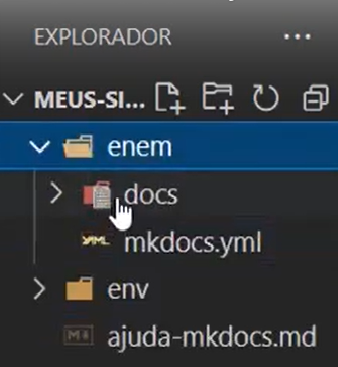
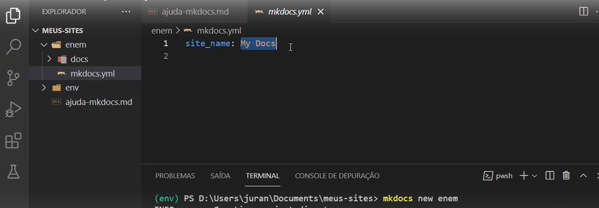
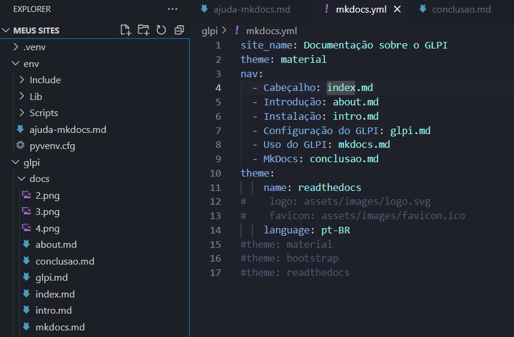
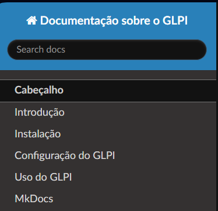

Começaremos agora um tutorial para instalar e utilizar o MkDocs utilizando VSCode e Python:
Passo 1: Preparativos *Instalar Python:
- Baixe e instale o Python 3.x a partir do site oficial do Python. Durante a instalação, certifique-se de marcar a opção "Add Python to PATH".
*Instalar Visual Studio Code (VSCode):
- Baixe e instale o VSCode a partir do site oficial do Visual Studio Code.
*Instalar Git:
- Baixe e instale o Git a partir do site oficial do Git.
Passo 2: Configurar o Ambiente *Abrir o VSCode:
-
Abra o VSCode.
-
Na opção de extensões, procure e instale a extensão Python

-
Na opção de arquivo abra os arquivos do explorer e crie uma pasta chamada 'meus sites' *Abrir um Terminal no VSCode:
-
Na pasta que foi criada, abra o terminal
-
Vá para Terminal > New Terminal ou use o atalho Ctrl + Shift + (crase).
Passo 3: Criar e Ativar um Ambiente Virtual *Criar um Ambiente Virtual:
- No terminal do VSCode, navegue até o diretório onde você deseja criar o seu projeto MkDocs e execute: python -m venv env
*Ativar o Ambiente Virtual:
- No VSCode, abra a paleta de comandos (ctrl=shift+p) e procure pela opção "Python: Select Interpreter"
Passo 4: Instalar o MkDocs
*Começando a instalação
-
Feche e abra o terminal novamente, depois digite o comando: pip3 install mkdocs mkdocs-material
-
Aguarde e verifique se a instalação foi bem sucedidia.
Passo 5: Criar um Novo Projeto MkDocs
*Criando um Projeto: - ainda no terminal do arquivo execute o comando: mkdocs new "nome da sua escolha"
- neste arquivo haverá duas subpastas, na pasta "mkdocs.yml" é onde será arquitetado todo o seu projeto

- dentro do espaço demostrado abaixo será feita a nomeação do projeto assim como todo o conteúdo a ser documentado.

Passo 6: Executar o Servidor de Desenvolvimento
*Iniciar o Servidor de Desenvolvimento:
-
No terminal, dentro do diretório do projeto, execute: "mkdocs serve"
-
Isso iniciará um servidor de desenvolvimento e fornecerá um URL onde você pode visualizar seu site localmente.
*Visualizar o Site:
- Abra um navegador e vá para o URL fornecido para visualizar o seu site MkDocs.
Passo 7: Editar o Conteúdo
*Abrir o Projeto no VSCode:
- No VSCode, abra o diretório do projeto (my-project).
*Editar o index.md:
- No painel do explorador do VSCode, abra o arquivo docs/index.md e comece a editar o conteúdo. As mudanças serão refletidas automaticamente no navegador se o servidor de desenvolvimento estiver em execução.
Passo 8: Personalizar o Site *Editar o mkdocs.yml:
- O arquivo mkdocs.yml é onde você pode configurar o tema, adicionar páginas, configurar navegação e outras opções.
*Adicionar Páginas:
- Crie novos arquivos .md no diretório docs e adicione referências a essas páginas no mkdocs.yml para incluí-las na navegação do site.
 
Passo 9: Construir o Site para Produção
*Construir o Site:
- Quando estiver pronto para publicar o site, execute: mkdocs build
- Isso criará um diretório site contendo os arquivos HTML estáticos que podem ser hospedados em qualquer servidor web.
E pronto, seguindo estes passos o MkDocs esta pronto para uso de acordo com seu critério.